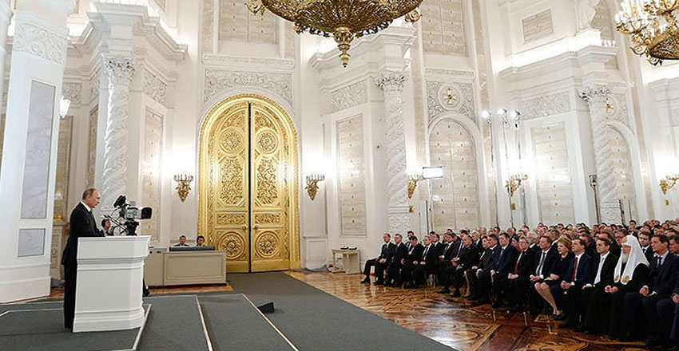
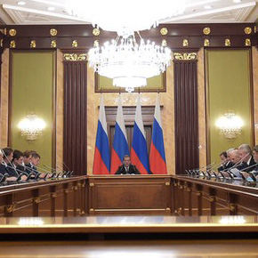

вся сумма технологий для управления корпоративными затратами
вся сумма технологий для управления корпоративными затратами
В послании президента бизнес услышал ряд важнейших инициатив, которые давно ожидались и активно обсуждались деловым сообществом в течение даже не последнего года, а последних лет.
В первую очередь речь идет, безусловно, о налоговой амнистии и обещании налоговой стабильности, обеспеченной мораторием на новые налоги. Это ключевая для нас тема. Мы давно просим власть о стабилизации налоговой системы: ладно, не улучшайте условия, но, пожалуйста, ничего не трогайте!
Тезис о том, что на четыре года налоговые условия будут заморожены, важнейший для всего отечественного предпринимательского сообщества, будь то индивидуальный предприниматель или крупнейший работодатель.
Тема амнистии стала одной из ключевых для бизнеса летом и осенью этого года, она активно обсуждалась в прессе, поскольку шли дискуссии на всех уровнях власти. Стоит ли удивляться: налоговая амнистия означает, что в Российской Федерации закрывается тема о законности приватизации. Перед правительством и Центральным банком в этой связи поставлены следующие важнейшие задачи:
Тема амнистии стала одной из ключевых для бизнеса летом и осенью этого года, она активно обсуждалась в прессе, поскольку шли дискуссии на всех уровнях власти.
Владимир Сенин Президент ассоциации менеджеров
На мой взгляд, президент дал четкий сигнал бизнесу: безбоязненно возвращайте капитал в Россию, а дальше - живите по закону.
Но у вас есть только одна попытка!
Мы вчера услышали достаточно конкретное послание, во второй части которого, посвященной экономике и внутренним задачам страны, правительству не просто даны четкие направления развития, но и указаны меры их реализации.
Это была программная речь. Теперь мы ждем, что правительство, отдельные министерства, Банк России, выступавшие адресатами этих тезисов, на их основе разработают четкие программы с целями, со сроками их реализации, с промежуточными этапами. Нужны реперные точки, позволяющие понять, где мы находимся, объясняющие действия исполнительной власти гражданскому обществу. Их нам сейчас не хватает.
Заседание правительства “О реализации дорожных карт”
Он предложил выделить средства на докапитализацию крупнейших отечественных банков при условии, что они будут направлены на кредитование ключевых проектов в реальном секторе экономики по доступной ставке. Пока не очень понятно, о какой цифре речь, как будет сформирован список этих проектов. От банков ждут проектного финансирования. Дискуссия о том, какую модель использовать для докапитализации банковской системы, активно ведется последние несколько месяцев. Мы рады, что президент об этом сказал, и надеемся, что это позволит ускорить принятие решения. Список приоритетных проектов должно составить правительство. Бизнес ждет от правительства «дорожную карту». Еще одна важнейшая тема — стабильность рубля. И это был очевидный сигнал той группе лиц, которая активно занимается валютными спекуляциями, что государство будет принимать меры, чтобы обеспечить неприятные для игроков последствия, не только в виде интервенций Банка России.
| Условия | 1993 г. | 2007 г. | 2015 г. |
| Срок проведения | 1 месяц | 10 месяцев | 10 месяцев |
| Субъекты | Физ. и юр. лица | Физ. лица | Физ. лица |
| Гарантии | Уплата налога - освобождение от ответственности | ||
| Итоги | 350 млрд. руб. | 3,7 млрд. руб. | н.д. |
Президент прямо поручил Банку России (насколько здесь подходит слово «поручил», ЦБ — независимая структура) пресечь спекуляции. Вне зависимости от того, что курс рубля стал плавающим, есть статьи закона о Центральном банке, где задача устойчивости и защиты национальной валюты для регулятора сформулирована как одна из приоритетных.
Задачи, поставленные президентом, могут быть реализованы при условии эффективной работы госаппарата. До настоящего времени его эффективность, качество управления были невысоки. Поменялась ситуация, и это объективное обстоятельство, которое заставляет по-другому оценивать эффективность действий правительства.